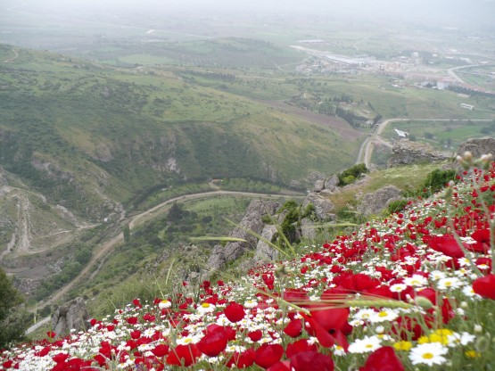
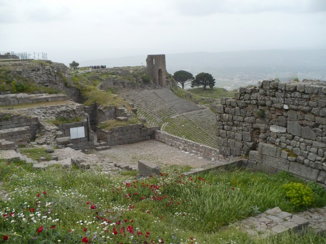
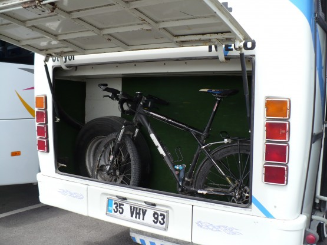
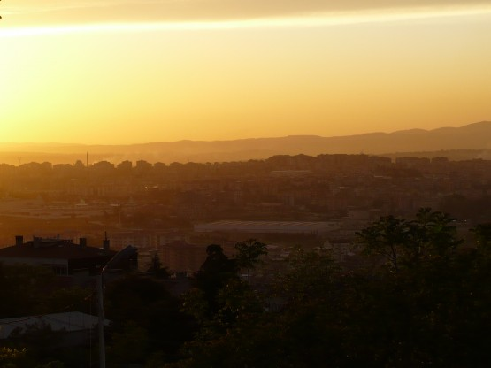

23 апреля
Утро в теплой в теплой кровати, душ, завтрак совмещенный с просмотром местного телевидения.
**
О телевидении и не только.
Не смотря на то, что в отелях я ночевал очень мало, местных телепередач насмотрелся вдоволь. Телевизоры стоят во многих кафе и лавочках. Если по телевизору показывают футбол, то жизнь замирает. Тебе уже никто ничего не пытается продать и даже не смотрят в твою сторону. У меня сложилось ощущение что все турки футбольные болельщики. В отсутствие футбола по TV крутят ролики турецких блондинок, мелькают местные политики и нечто жутко патриотическое про турецкую армию, причем с такой музыкой, что хочется встать и идти маршировать.
**
О турецкой армии.
Ее много и она везде. Военные городки за колючей проволокой, целые маленькие города внутри городов, с детскими площадками и часовыми на входе. Самолеты, стрельбища, вышки, часовые, раскрашенные машины. Ощущение, что военных в Турции на порядок больше чем у нас. Все на территории военных частей прилизано и покрашено свежей краской, порой кажется, будто оно бутафорское, но это не так.
Позавтракав и посмотрев, привычный уже, TV-набор выдвигаюсь дальше. Дорога ведет в гору, любили же эти древние селится наверху и как они туда без велосипеда только забирались. . . Уже на подъезде к Акрополису открываются потрясающие виды
Эта картинка долгое время заполняла мой рабочий стол:

Сами развалины особо не впечатлили, обычный набор
Бергамский Акрополис:
но есть там одно место, ради которого стоило ехать в гору.

На фото оно не представляет из себя ничего особенного, на самом деле место просто удивительное. По мере приближения к этому балкону на тебя начинают накатываться звуки большого города, именно накатываться, перекрывая друг друга, громко, раскатисто.
Отчетливо различимы сигналы машин, музыка. . . Чем ближе к центру тем громче. Удивительно то что до источника этих звуков - города несколько километров, а самое главное, что уже в 10 метрах радом нет никаких звуков. Удивительное место.
Спускаюсь с горы, бросаю прощальный взгляд на узкие улочки гостеприимной Бергамы и еду на автовокзал. Да меня не обманули, велосипед действительно прекрасно поместился в багажнике этого маленького автобуса.

Маленький и шустрый автобус привозит меня в Сома, где ждет разочарование. Выясняется, что из сома в Балыкесир ходят только маленькие автобусы другой конструкции, без багажников. Предлагают поставить велосипед в салон, вдоль задних четырех сидений и занять их. Все это счастье за 3 стоимости билета. Отказываюсь и начинаю собираться ехать своим ходом. Водители долго и бурно совещаются и высылают парламентера. Четыре места по цена двух. . . Соглашаюсь. Справедливости ради надо заметить, что это единственный раз, когда мне пришлось доплатить за провоз велосипеда на автобусе. Зачем им было надо везти меня, я так и не понял, автобус был полон и на 4 занимаемых мной местах могли бы сидеть пассажиры, в итоге заплатившие большее количество денег. Зато я ехал лежа и даже немного поспал. Вот и Балыкесир со своим шумным автовокзалом. Мелкий и очень шустрый турок бегает с моим груженным велосипедом по зданию вокзала, показывая мне где тут поменять деньги (кстати по приличному курсу), а где купить билеты. Это явно доставляет ему удовольствие. Мой велосипед загружают в большой автобус. Я уже даже и не пытаюсь помогать им в этом.
Да к хорошему быстро привыкаешь. Несколько часов поездки в удобном автобусе и я уже в Бурсе.
Вот она вечно зеленая Бурса. Чувствуется, что тут значительно прохладнее. Начинаю подниматься в горы вместе с городскими кварталами.
Еще один неповторимый закат

Поднимаюсь выше города и уже в темноте нахожу ровную поляну над изгибом дороги. Даже ночью заметно, что здесь красиво.
Засыпаю с мыслью о завтрашнем подъеме на Улудаг. День получился автобусный, километров 700 примерно, ну и 33 на велосипеде.